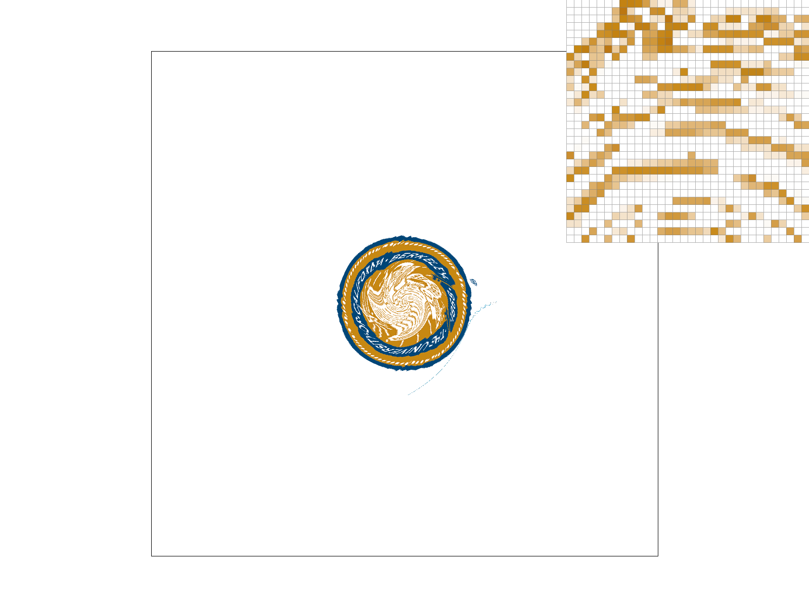

In this homework, we implemented rasterizing single-color triangles, supersampling algorithms, barycentric coordinates, and pixel sampling for texture mapping. This homework is very funny and introduces us to the basic algorithms of computer graphics. The supersampling part is a bit challenging, and we went through tough debugging process. It is very rewarding to see that the edges are getting smooth eventually!
The implementation of triangle rasterization is based on the point-in-triangle test method, utilizing three line equations to define the triangle's boundaries. By computing the line functions Li for each vertex, We were able to determine a point's inclusion within the triangle efficiently. This method proved to be more efficient than the naive bounding box approach by reducing computational overhead and focusing on likely pixel candidates.
Our algorithm optimizes the rasterization process by eliminating unnecessary sample checks outside the triangle. This targeted approach ensures that only potential points within the triangle are considered, resulting in a performance gain over simpler methods.
The image below shows the result of rendering basic/test4.svg without any sampling. Noticeable 'jaggies' along the triangle edges highlight the need for anti-aliasing techniques in rendering.
Super-sampling is a technique used to reduce aliasing, which is the visual staircasing effect that occurs on edges within a rasterized image. To implement this, we updated the rasterization process to include multiple sample points within each pixel. Here's how we approached it:
·We iterated through each pixel within the bounding box of the triangle. For each pixel, we computed a sub-grid based on the square root of the 'sample_rate'.
·For each sub-sample point within the pixel, we calculated the sub-pixel coordinates by offsetting them by half the size of a sub-pixel and checked if this point was inside the triangle using the 'is_inside' function.
·If the sub-sample point was inside the triangle, we stored the color into the 'sample_buffer' array at the position corresponding to the sub-sample.
·After processing all sub-samples for all pixels, we averaged the color samples within each pixel to determine the final pixel color. This averaging process helps to smooth out the color transitions across edges, thus reducing the jagged edges or "jaggies" that are characteristic of aliasing.
The results clearly demonstrate the effect of super-sampling in improving image quality. With no super-sampling, the edges of triangles are jagged and exhibit stark contrast against the background. As the sample_rateincreases, the edges become smoother, and the aliasing artifacts are greatly reduced.
Here are some key observations:
· Rate 1 (No Super-sampling): The edges are jagged, and pixelation is evident.
· Rate 4: Improved image quality with smoother edges.
· Rate 8: Further improvements with even smoother transitions.
· Rate 16: Minimal aliasing, edges appear very smooth.
The results across different supersampling rates are compiled below, showcasing the significant improvements in image quality as the rate increases.
In this task, We ventured into the world of SVG transformations, where we applied various matrix operations to manipulate the graphical representation of a robot. The objective was to animate the robot in a way that it appeared to be dancing.
We focused on the three fundamental transformations: translation, scaling, and rotation, as specified in the SVG specifications. These transformations were implemented in the 'transforms.cpp' file, utilizing homogeneous coordinates for the operations. The matrices we used are 3x3 to be compatible with the 2D vector operations in our codebase.
The challenge was to apply these transformations in such a manner that the robot seemed to be in motion. To achieve this, we utilized the following functions, which we modified accordingly:
· 'translate' To move the robot's limbs in a rhythmic pattern.
· 'scale' To simulate a bouncing effect as the robot 'dances'.
· 'rotate' To tilt the robot's limbs, adding a dynamic flair to the movements.
The attached screenshot shows the transformed robot. We altered the positions of the robot's limbs to give the impression of a dance move.
In Task 4, the focus was on implementing the 'RasterizerImp::rasterize_interpolated_color_triangle(...)' function. This function is crucial to create a visual effect where colors at the vertices of a triangle are smoothly blended across its area, thanks to the magic of barycentric interpolation. The core of this task was to apply barycentric coordinates to calculate the color at any point within the triangle, resulting in a gradient effect.
By manipulating the vertices' colors and employing the barycentric coordinates, we enabled the rendering of triangles with smoothly transitioning colors. The implementation involved the following steps:
·Calculating barycentric coordinates for each pixel within the bounding box of the triangle.
·Using these coordinates to interpolate the vertex colors across the triangle.
·Ensuring each pixel's color was a weighted combination of the vertices' colors, with the weights being the barycentric coordinates themselves.
The accompanying image, a result from '/basic/test7.svg', showcases the outcome of this implementation. As observed, the color wheel illustrates a perfect gradient transition, representing the fundamental concept of barycentric interpolation – the closer a point is to a vertex, the more it resembles that vertex's color. This technique is particularly effective in graphics rendering for generating complex color surfaces and textures, and its implementation here provides a clear, visual understanding of its capabilities.
In the implementation of pixel sampling for texture mapping, we have employed two distinct methods: nearest neighbor and bilinear interpolation. These methods are pivotal in determining how texture information from the 2D texture coordinates at each vertex of a triangle is sampled and applied.
·Nearest-pixel Sampling:
This is the simpler of the two techniques. When a texture coordinate points to a location between two pixels, this method selects the pixel that is closest to the coordinate. This approach is straightforward but can lead to blocky or pixelated results, especially when dealing with minification or magnification of textures. In the code, this is executed by the 'sample_nearest' function, which rounds the texture coordinates to the nearest pixel's coordinates and retrieves its color.
·Bilinear Interpolation Sampling:
Bilinear interpolation is more sophisticated than nearest neighbor sampling. It improves on the blockiness by considering the closest four pixels around the texture coordinate and applying a weighted average based on the distances. This method typically results in smoother transitions and less pixelation. The 'sample_bilinear' function in the code performs this calculation by interpolating between the four closest pixel values, which results in smoother visual texture on the surfaces.
·Nearest Sampling at 1 Sample per Pixel:
This method is the simplest form of texture mapping, where each pixel's color is determined by the nearest texel's color. The result is often a blocky and pixelated image, especially noticeable at lower resolutions or when the texture is magnified. This can be seen in the badge and map images 'Figure15' and 'Figure19' where the edges are particularly jagged and there is a lack of smoothness in color transitions.
·Nearest Sampling at 16 Sample per Pixel:
Increasing the sample rate to 16 samples per pixel using the nearest method refines the visual output slightly. The edges appear less jagged, and there is a minor improvement in the depiction of details. Despite the increased sample rate, 'Figure16' and 'Figure20' still lack smooth color gradients, maintaining a somewhat granular appearance.
·Bilinear Sampling at 1 Sample per Pixel:
Bilinear sampling interpolates between the four nearest texels to compute the color of each pixel, resulting in smoother transitions and less blockiness. Even at 1 sample per pixel, the 'Figure17' and 'Figure21'show noticeable improvements in smoothness over the nearest sampling method. The edges and color gradients are more natural and less pixelated.
·Bilinear Sampling at 16 Sample per Pixel:
The highest quality of texture mapping in this set is achieved with bilinear sampling at 16 samples per pixel. The 'Figure18' and 'Figure22'exhibit a smooth texture representation with soft edges and subtle color gradients. This method provides the best visual fidelity, closely resembling the original texture, especially in complex areas with detailed color variations.
|

|
|
|
|
|
|
|
|
|
|
|
The comparison clearly indicates that bilinear interpolation, particularly at higher sample rates, significantly outperforms nearest neighbor sampling in producing a more accurate and visually pleasing representation of the texture. This is particularly evident in areas of the image where there is a high level of detail or when the texture needs to be displayed at a scale different from the original.
The choice of pixel sampling method has a substantial impact on the visual outcome of texture mapping in rasterization. The nearest neighbor method, while adequate for certain applications, may not be suitable when high-quality texture mapping is required. Bilinear interpolation, despite its higher computational cost, is preferable for applications where visual quality cannot be compromised. Our implementation provides the flexibility to choose the most appropriate pixel sampling method based on the specific requirements of the rendering context.
·Level Sampling with Mipmaps:
The goal here was to enhance the texture mapping process by using mipmaps, which are pre-calculated, optimized sequences of images, each of which is a progressively lower resolution representation of the same image. The use of mipmaps helps in reducing aliasing and improving rendering speed, as the GPU can choose the most appropriate resolution based on the distance and angle of the surface relative to the camera.
·Level Sampling Methods
The code had to accommodate three level sampling methods controlled by the 'lsm' variable:
·L_ZERO: This method uses the base-level image from the mipmap chain, providing the highest resolution for texture sampling regardless of the distance or size of the texture on the screen.
·L_NEAREST: With this method, the code calculates the necessary mipmap level based on the change in texture space across a pixel (using derivatives of the texture coordinates). It then samples from the nearest mipmap level to this calculated value.
·L_LINEAR: The most advanced of the three, linear level sampling involves taking a weighted average of two samples from adjacent mipmap levels, based on the calculated mipmap level. This method provides a smoother transition between mipmap levels and is particularly effective in reducing aliasing during minification.
·Texture Sampling:
The Texture::sample function was modified to choose between the nearest and linear sample functions based on the 'psm' variable and to consider the appropriate mipmap level based on the 'lsm' variable.
·Mipmap Level Calculation:
The 'Texture::get_level' function is critical as it calculates the correct mipmap level. It requires derivatives of the texture coordinates ('du/dx', 'du/dy', 'dv/dx', 'dv/dy') to determine how quickly the texture is changing in screen space and then uses these derivatives to calculate the level of detail (LOD). The LOD is a floating-point value that is then used to select the appropriate mipmap level or levels for sampling.
·Helper Functions:
Functions like Texture::sample_nearest and Texture::sample_bilinear from Task 5 are reused, but now they take an additional parameter indicating the mipmap level to sample from.
·Integration with Rasterizer:
The 'RasterizerImp::rasterize_textured_triangle' function integrates level sampling by first calculating the LOD for each vertex of the triangle and then interpolating these values across the triangle during rasterization. The correct mipmap level for each pixel is thus determined dynamically, leading to the appropriate texture detail level being used for rendering.
Given these implementation details, the texture mapping should now gracefully handle changes in pixel size and distance, providing the most appropriate texture detail while optimizing performance and reducing visual artifacts.
The actual code implementation details would delve into how each function is modified to support these features, including any new data structures or algorithms used to efficiently calculate and use the mipmap levels. It would also outline any changes made to the shader programs if applicable.
·Zero Level Nearest Neighbor(Figure23)
This method displays textures with a certain roughness, particularly noticeable at edges and where there's a steep color gradient. This approach is fast but can result in a pixelated appearance when textures are magnified.
·Zero Level Linear (Figure24)
Here, we see an improvement in the smoothness of the texture. The blending of mip levels provides a more coherent visual without the stark pixelation seen in the nearest neighbor method.
·Nearest Mipmap Level Linear(Figure25)
This method provides a balance between detail and performance. While it eliminates some harshness seen in zero level nearest neighbor sampling, some granularity remains.
·Nearest Mipmap Level Nearest Neighbor(Figure26)
This approach offers a smoother texture representation by interpolating colors between texels. It reduces aliasing compared to nearest neighbor methods, particularly visible in high-contrast areas.
|
|
|
|
|
|
In conclusion, the choice of sampling method has a profound impact on the final rendered image. Nearest neighbor methods, while computationally less intensive, can result in a less accurate representation of the texture, especially when viewed at an angle or from a distance. Linear sampling methods offer a more visually pleasing result by blending texel values, which is particularly beneficial when dealing with textures that exhibit fine detail or when the viewing conditions vary significantly.
We employed generative AI tools to enhance various aspects of my project, focusing on improving my write-up, facilitating the debugging process, and modifying an SVG file for a robot design. Utilizing AI for the write-up helped me refine the clarity and coherence of my explanations, ensuring that complex concepts were accessible and well-articulated. For debugging, the AI tools significantly increases my efficiency to find errors. By inputting error messages and describing unexpected behaviors, I received targeted advice on potential fixes, which are valuable information for our debugging.